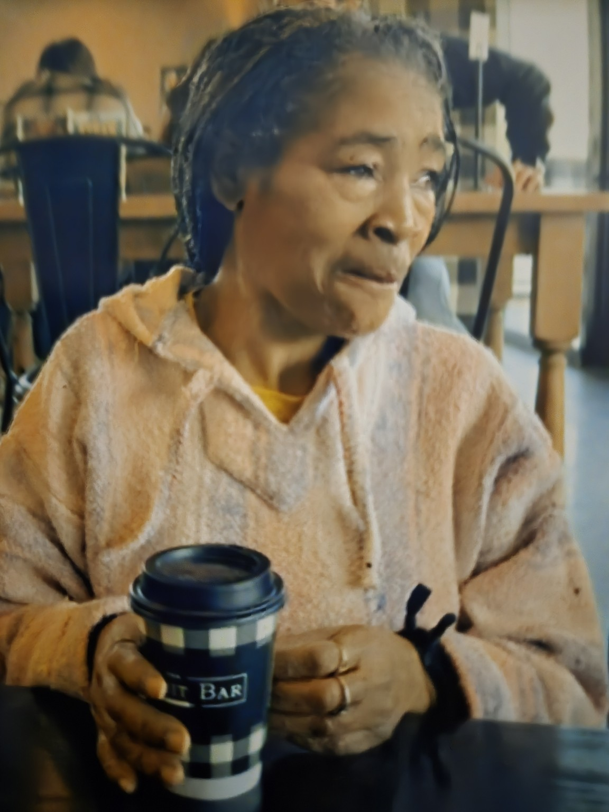
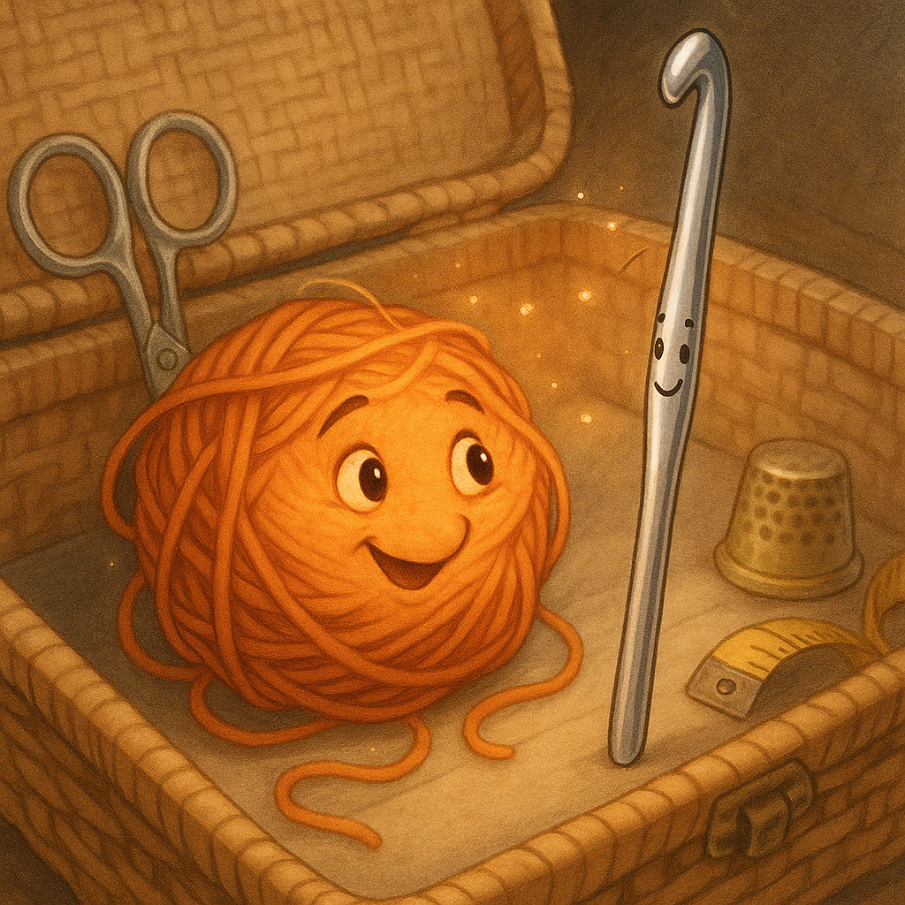

Needle & Yarn: A Love Stitched in Time
by Leola (Sister) Lee
First Edition
Published by Leola's Library
Milwaukee, Wisconsin
Copyright
Copyright © 2025 by Leola (Sister) Lee
All rights reserved. No part of this publication may be reproduced, distributed, or transmitted in any form or by any means, including photocopying, recording, or other electronic or mechanical methods, without the prior written permission of the publisher, except in the case of brief quotations embodied in critical reviews and certain other noncommercial uses permitted by copyright law.
ISBN: 978-1-XXXXX-XXX-X
Library of Congress Control Number: XXXXXXXXXX
Printed in the United States of America
First Printing, 2025
Dedication
To my children, grandchildren, and great-grandchildren, who have been the threads that bind my life together.
To every hand that has ever held a crochet hook, seeking to create something beautiful.
And especially to those who have yet to discover the joy of creating with yarn and needle — may this story inspire your journey.
With love and faith,
— Sister Lee
Contents
Dedication ............................................. iii
Foreword .............................................. v
Chapter 1: The Magic Begins .......................... 1
Chapter 2: The First Hello ............................ 5
Chapter 3: Working Together ...................... 9
Chapter 4: The Break .................................... 13
Chapter 5: The Return ................................. 17
Chapter 6: You're Part of the Pattern .......... 21
About the Author .................................... 25
Foreword
In my many years of crocheting, I've come to understand that every stitch tells a story. Just as we loop, twist, and connect yarn to create something beautiful, our lives are a series of connections, breaks, and mending.
This book was born from the quiet hours spent with my hook and yarn, contemplating the lessons learned through this craft that has been my companion through joy and sorrow alike.
To crochet is to understand patience, to recognize that sometimes we must undo our work to create something stronger. It teaches us that mistakes are not failures but opportunities for growth. Most importantly, it reminds us that we are all connected—stitched together in a pattern larger than ourselves.
I hope this tale of Needle and Yarn brings you joy and perhaps a new perspective on the art of creating, whether you are a seasoned crocheter or have yet to hold a hook in your hands.
With love,
Leola (Sister) Lee
Milwaukee, Wisconsin
Spring 2025
Chapter 1: The Magic Begins
In this cozy corner, filled with the scent of warm memories and brewing tea, sat Leola. Her fingers, wise with years of craft, moved like memory itself, creating warmth and wonder. And inside her basket, nestled amongst soft threads and shining tools, magic waited quietly.
The basket was old—older than some of the children who often gathered around it, eyes wide with wonder. Its woven sides had weathered decades, holding the tools of creation: scissors that had trimmed countless tails, stitch markers that had held places in time, and hooks that had pulled dreams into reality.
But the true magic lay in how Leola's hands transformed simple strands into blankets that wrapped around shoulders like hugs, into hats that crowned heads with care, and into stuffed creatures that became beloved friends to little ones.
"Grandma Leola, can you make me a dragon?" a small voice would ask.
"Why, certainly," she'd reply with a smile that crinkled the corners of her eyes. "What color should this dragon be?"
And so the magic would begin again, with a fresh ball of yarn and the faithful hook that had been her companion for longer than most could remember.
Unbeknownst to the children—and indeed, to Leola herself—the tools in her basket had stories of their own. For when the house grew quiet and the last light dimmed, something stirred among the yarns and notions.
It was in one such peaceful evening, with moonlight spilling across the living room floor, that the magic truly awakened. Leola had fallen asleep in her favorite chair, a half-finished project resting in her lap. Her reading glasses had slipped down her nose, and her breathing had deepened into the rhythm of dreams.
And that's when it happened—a stirring in the basket, a whisper among the tools, and the beginning of a friendship that would change everything.
Chapter 2: The First Hello

"Oh, my stars! I seem to have gotten myself into a bit of a... well, a right proper mess!" The voice was bright, a splash of sunshine in the moonlit room.
Needle, startled from his musings, looked up. It was Yarn, a glorious, tangled explosion of sunset orange cotton. She had somehow worked herself into an impressive knot while trying to arrange herself more comfortably in the basket.
"Well, aren't you a breath of fresh air?" Needle chuckled, a warmth spreading through his metal core. He had been in Leola's collection for years—a faithful aluminum hook with a comfortable grip that had helped create countless projects. He was practical, patient, and perhaps a bit set in his ways.
Yarn twisted slightly, trying to see who had spoken. "Oh! Hello there. I didn't realize anyone was awake. I'm new here—just arrived today. Leola seems lovely, doesn't she? I'm so excited to see what I'll become!"
Needle smiled at her enthusiasm. New yarns always had that hopeful energy, that eagerness to be transformed. "She is indeed wonderful. Best hands in the business, if you ask me. I'm Needle, by the way. Been with Leola for about fifteen years now."
"Fifteen years!" Yarn exclaimed, her strands quivering with excitement. "You must have made so many beautiful things together!"
"More than I can count," Needle replied with quiet pride. "Blankets for every grandchild, sweaters for winter gifts, toys for the little ones. Each project has its own story."
"I can't wait to be part of a story," Yarn sighed dreamily. "What do you think I'll become?"
Needle considered the vibrant orange hue, the way it seemed to capture light even in the darkness. "Something special, I'd wager. Leola doesn't often choose colors this bold without a particular vision in mind."
As they spoke, other items in the basket began to stir—scissors that snipped in agreement, stitch markers that clinked softly together, a tape measure that stretched lazily.
"Welcome to the family," they all seemed to say, each in their own way.
And that was the beginning—a simple hello between Needle and Yarn, unaware of the journey that awaited them both.
Chapter 3: Working Together

Needle, ever so patient, began to show Yarn the rhythm of the stitches. "It's like a dance," he explained, "a partnership."
The next morning arrived with golden light filtering through lace curtains. Leola returned to her chair, picked up her project, and reached for the new ball of orange yarn. Yarn quivered with anticipation.
"Today's the day," Needle whispered encouragingly as Leola's fingers closed around them both.
And so their dance began. Leola's skilled hands guided them, but Needle and Yarn found their own rhythm together. Needle showed Yarn how to twist and loop, how to flow through each stitch with grace.
"Relax," Needle advised when Yarn tensed up during a complex stitch. "Trust the process."
"But what if I make a mistake?" Yarn worried, her fibers tightening with anxiety.
"Mistakes are part of creating," Needle assured her. "Sometimes Leola has to unravel rows of work to fix something. But that's how we grow—we learn, we adapt, we try again."
As days passed, they created something beautiful together—a small stuffed fox with a white-tipped tail and clever button eyes. Yarn marveled at her transformation, at how Needle had helped guide her into this new shape.
"I never imagined I could become something so wonderful," she said as Leola added the final touches.
"You had it in you all along," Needle replied. "I just helped you find your form."
Leola held up the finished fox, admiring it in the afternoon light. "Perfect," she murmured with satisfaction. "Little Elijah will love this."
Needle and Yarn shared a moment of pride. Their first project together had been a success, but more importantly, they had found something neither expected—a deep connection, an understanding that went beyond their craft.
They were no longer just tools in a basket. They were partners, friends, two parts of a creative whole.
Chapter 4: The Break

But alas, even in the most carefully woven stories, a thread can snag. As they worked on a cozy hat, disaster struck!
It was a simple project, really—a warm hat for Leola's youngest grandson. The yarn was thick, a rich mossy green that reminded Needle of forests in springtime. They had been working steadily, row upon row of double crochet creating a fabric that would keep a small head warm through winter winds.
"You're doing wonderfully," Needle encouraged as they approached the crown decreases. "These tighter stitches can be tricky, but I know you can handle them."
Yarn, now more confident after several successful projects, stretched herself with determination. "We make a good team, don't we?"
"The best," Needle agreed, and in that moment of shared pride, neither was paying quite enough attention.
Leola's hands moved swiftly, experienced and sure. But the yarn had formed an unexpected knot—nothing major, just a small tangle that tightened as she pulled. And as Needle caught on that stubborn knot, with a sharp, painful snap... his tip chipped.
The sound was tiny, barely audible, but to Needle it was deafening. A small piece of his metal point broke away, leaving a jagged edge where once there had been smooth perfection.
Yarn gasped, her bright color dimming with worry. "Needle! Are you alright?"
Needle winced, a strange sensation spreading through him. Pain, yes, but also fear. "I've... I've had better days, my dear."
Leola noticed immediately. She held Needle up to the light, examining the damaged tip with a frown. "Oh dear," she murmured. "That won't do at all."
And just like that, Needle was set aside. Not discarded—never that—but placed carefully in a small dish on the side table. Leola rummaged through her notions bag and pulled out another hook, similar but not the same. Not Needle.
"I'll fix you up soon," she promised, patting Needle gently before returning to her work with the replacement hook.
Yarn looked back helplessly as she was guided into loops by this stranger. "Needle," she called softly. "I'll wait for you."
But Needle couldn't answer. For the first time in fifteen years, he wasn't creating. He was just... waiting. Broken. Alone.
Chapter 5: The Return
Days felt like weeks for Yarn. The basket was quiet, her stitches uneven.
The replacement hook was efficient but impersonal. There was no banter, no shared joy in the creation process. Yarn tried to engage him in conversation, but he was new and nervous, focused only on the task at hand.
"Have you worked with Leola long?" Yarn asked during a brief pause in their work.
"No," came the terse reply. "I was in her emergency kit. This is my first real project."
Yarn sighed inwardly. She missed Needle's patient guidance, his quiet confidence, the way he seemed to understand exactly how to help her through difficult stitches.
Meanwhile, Needle sat on the side table, watching as life continued without him. He saw other projects completed, heard the chatter of the basket at night, observed Leola's hands creating beautiful things—all without him.
"Perhaps this is it," he thought sadly. "Perhaps my time of usefulness has ended."
But then, on a bright Tuesday morning, Leola picked him up again. She placed him carefully in her purse alongside her wallet and keys.
"Where are we going?" Needle wondered, hope fluttering faintly.
The answer came in the form of a small shop with a sign that read "Notions & Repairs." Inside, an elderly man with spectacles perched on his nose examined Needle carefully.
"Good hook," he commented. "Aluminum, ergonomic handle, size H. Worth fixing."
"It's been with me for years," Leola explained. "Has sentimental value."
The man nodded understanding. "Come back tomorrow. I'll reshape the tip, polish out any rough edges."
For Needle, the next 24 hours were a transformation. Gentle hands guided specialized tools that ground away the jagged break, reformed his tip to a perfect curve, and polished his entire length until he gleamed like new.
When Leola returned, she smiled at the result. "Perfect," she said, placing Needle carefully back in her purse. "Like it never happened."
But it had happened, and Needle was not the same. He was, perhaps, a little wiser, a little more aware of his own vulnerability. And he was desperately eager to return to the basket, to Yarn, to the work that gave him purpose.
But then, Leola returned, a gentle smile on her face. And in her hand... was Needle! Mended, polished, and shining brighter than ever.
"Needle! You came back!" Yarn's voice was full of relief.
"I told you I would, my dearest Yarn," Needle replied warmly. "Some stitches take time to mend... but every loop, eventually, finds its way home."
Chapter 6: You're Part of the Pattern

And just like that, with Needle mended and their bond stronger than ever, they finished their project.
The hat was nearly complete when Needle returned. His replacement was thanked and returned to the emergency kit, and Needle was welcomed back with joy by all the notions in the basket.
But it was Yarn's welcome that meant the most—the way she seemed to relax in Leola's hands when Needle guided her through the stitches again, the way she hummed softly as they worked together.
"I missed this," Yarn confessed as they finished the final rounds of the hat.
"As did I," Needle replied. "Being unable to create, to help shape something beautiful... it was like losing my purpose."
Yarn thought about this. "But you know," she said thoughtfully, "even when you weren't actively working, you were still part of the pattern."
"What do you mean?"
"Well, the hat continued to grow, even in your absence. The project moved forward. And now you've returned to help complete it. The finished hat will have stitches made both with and without you, but it will still be whole, still be beautiful."
Needle considered this wisdom. "You've become quite the philosopher," he teased gently.
"I learned from the best," Yarn replied. "You taught me that creating is about more than just making stitches—it's about connection, about building something greater than ourselves."
As Leola fastened off the final stitch and wove in the ends, she held up the completed hat with satisfaction. It was perfect—warm, sturdy, made with love in every loop.
A beautiful creation, stitched not just with yarn, but with patience, resilience, and a love that had weathered its first storm.
It became more than just an item; it became a gift, a symbol that even after a break, things can be mended, often becoming even more precious.
"You know," Needle said as Leola placed them back in the basket, "I think I needed to break to truly understand my purpose."
"And what is that purpose?" Yarn asked softly.
Needle was quiet for a moment before answering. "To create, yes. But also to connect. To guide. To be part of something larger than myself." He paused. "To be your partner in this dance of creation."
Yarn nestled closer to him in the basket. "I like that purpose very much," she whispered.
And as moonlight once again spilled across the quiet room, the basket full of notions settled into peaceful silence—each item understanding a little better their part in the greater pattern of creating, of connecting, of love.
About the Author

Leola (Sister) Lee was born in the heart of Mississippi and has been a proud resident of Milwaukee since 1985. A mother of six, grandmother of thirteen, and great-grandmother of ten, she carries generations of care in her hands—whether she's crocheting a blanket, painting a portrait, or penning a story from the soul.
A devout woman of faith, Sister Lee has been a pillar of her community for decades. Her artistry isn't confined to the yarn or canvas—it lives in the way she nurtures, uplifts, and teaches others. From local workshops to living rooms filled with grandkids, her gift has always been in guiding others with patience, warmth, and a deep belief that creativity heals.
This children's tale, "Needle & Yarn: A Love Stitched in Time," reveals her storytelling heart. Through a charming, symbolic journey of connection and separation, Sister Lee explores themes of resilience, unity, and the invisible thread that ties people—and generations—together.